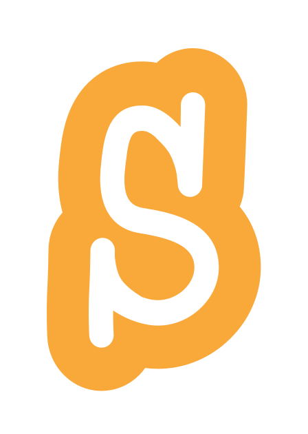
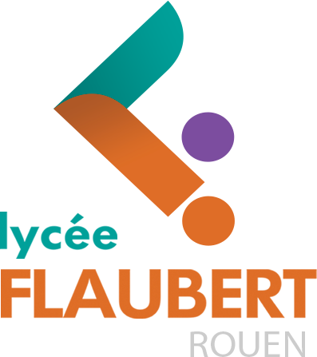
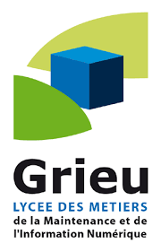
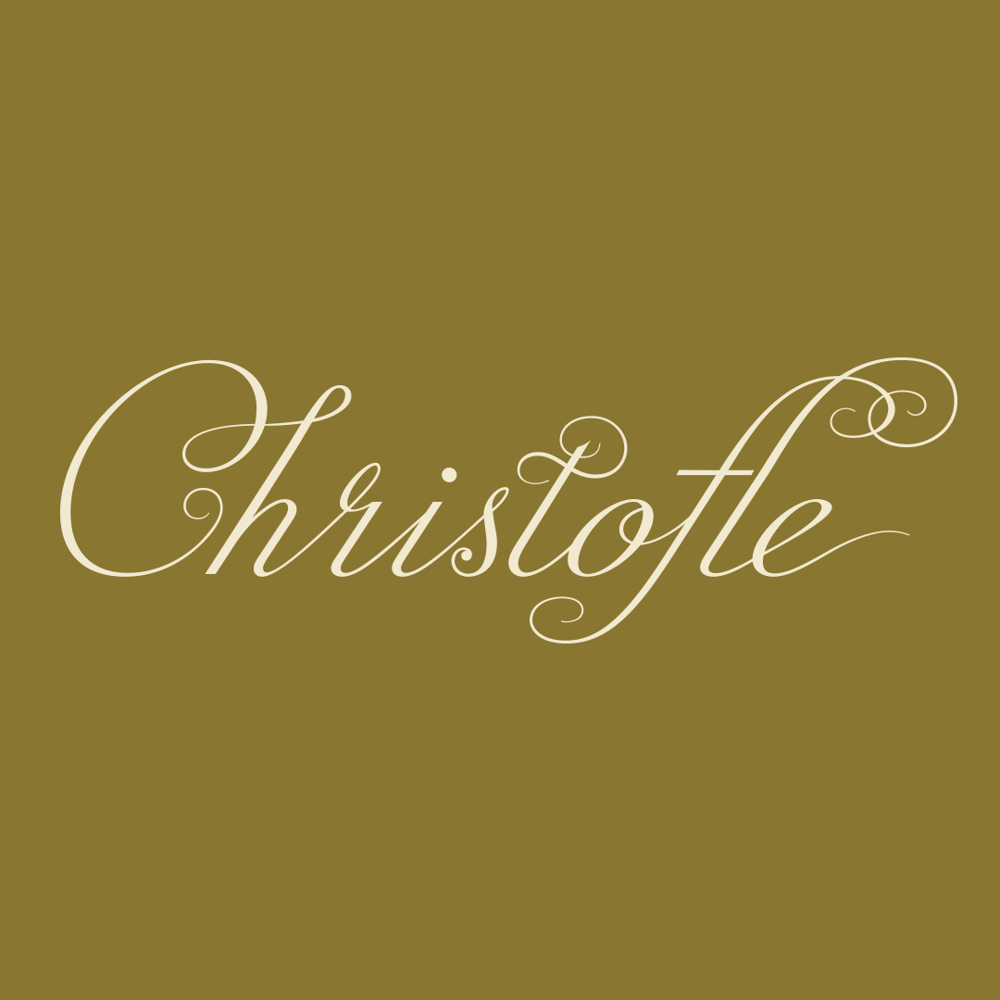
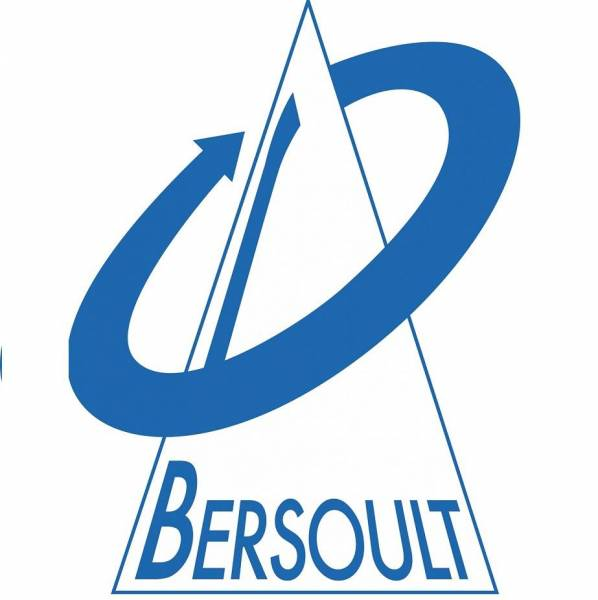

Bienvenue !
Présentation
À propos de moi
Passionné de développement de logiciels et jeux vidéo depuis le collège, je me forme en BTS SIO SLAM pour transformer cette passion en métier. Ma curiosité s'étend aux réseaux, à Linux et à l'électronique.

2017
Tout a commencé en 6e, en cours de mathématiques, avec la découverte de Scratch : un logiciel de programmation visuelle où l'on assemble des blocs d'instructions. Une flamme s'est allumée : créer des jeux à partir de simples algorithmes m'a fasciné.
2020
Ayant atteint les limites de Scratch, j'ai appris Python avec des tutoriels YouTube et W3Schools. Ce que je faisais sous Scratch se traduisait facilement en Python. J'ai créé plusieurs logiciels pour automatiser des tâches, et choisi la voie du développement pour mes études.
2021
Pour créer des jeux, j'ai suivi une formation Udemy sur C# et Unity, et passé une grande partie de mon temps libre sur des mini-jeux. Mes projets grossissant, j'ai compris qu'une grande difficulté du développeur est d'organiser son code pour le rendre modulaire et lisible.
2023
Curieux du modding, j'ai appris Java pour modder Minecraft. J'y ai appris à différencier opérations côté serveur et côté client : créer des cheats côté client, puis les contrer côté serveur. J'ai aussi enrichi Meteor Client (mod boîte à outils) avec mes propres modules. Leçon retenue : ne jamais faire confiance à la machine du client. J'ai également fait de la rétro-ingénierie d'un launcher pour analyser la sécurité de son système d'authentification.
2024
Découragé par la pente d'apprentissage d'Unity et ses nouvelles politiques d'utilisation, je suis passé à Godot Engine. Cela a rallumé ma flamme : beaucoup de jeux créés, grande aisance en GDScript, jusqu'à modifier le moteur lui-même (écrit en C++).
Par souci de liberté numérique, je suis aussi passé de Windows à Linux sur tous mes ordinateurs, et je ne cesse d'expérimenter avec.
Passionné aussi par les serveurs, j'ai monté un serveur sous Debian et un autre sous Artix pour héberger Jellyfin, Git, de la domotique, etc.
2025 - aujourd'hui
Ma formation au Lycée Gustave Flaubert m'a fait découvrir le développement web : HTML, CSS, JavaScript, PHP, frameworks (Bootstrap, Django, NodeJS) et CMS (WordPress, Wix).
Études

Lycée Gustave Flaubert
BTS SIO SLAM 1re année
(2025-2026)

Lycée des Métiers Les 4 Cantons - Grieu
BAC Pro SN RISC
2nd MTNE
(2022-2025)
Stages

Christofle
Manufacture d’orfèvrerie - Yainville (76480)
- Service informatique et réparation/dépannage d'ordinateurs
- Administration de systèmes d’information
- Traitements de documents numériques
Septembre 2024, Janvier 2025 (6 semaines)

Bersoult et Fils
Service de réparation d'appareils électroménagers - Maromme (76150)
- Dépannage de matériel informatique
- Livraison, installation et dépannage d'appareils électroménagers
Novembre 2022, Juin 2023, Novembre 2023, Avril 2024 (14 semaines)
Digitaldune
Développement Web, Architecture SI, DevOps - Rouen (76000)
- Mise en place environnement DevOps GitLab CI/CD
- Développement site vitrine
- Étude comportement LLM et GEO